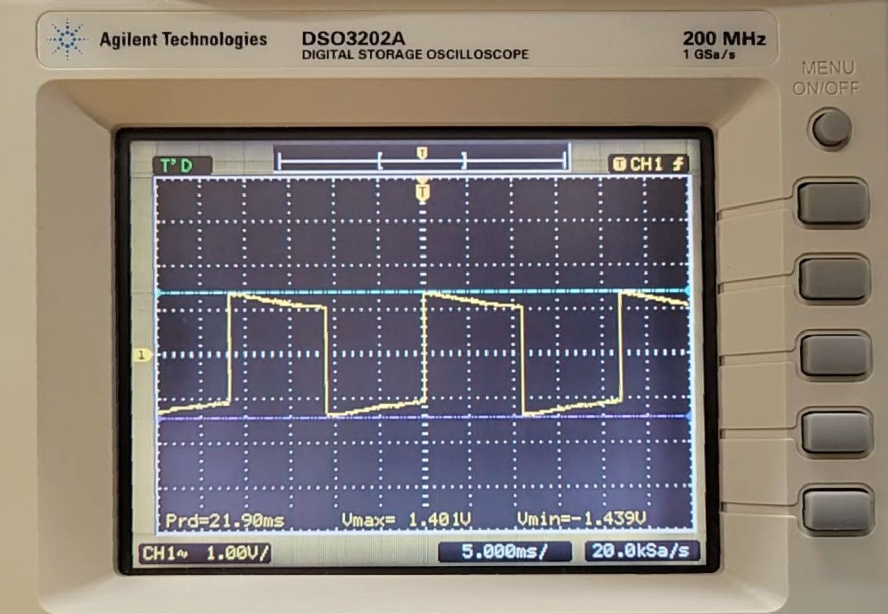

Home: ⌂ Introduction ⌂
Figure 1: Calculator Use-Case Diagram
The keyboard serves as the primary point of user interaction with the device; it provides a number of potential actions or operations to the user depending on the current state. As shown in the above figure, green states represent actions available to the user at any point; although, many of these states may not produce the desired behavior unless specific conditions are met, such as the memory operations. Yellow states require the preceding states or conditions to have occurred before they are available to the user, e.g. an operand must be entered before selecting an operator. Red states are terminal states managed and determined by the device’s internal logic.
The following timing diagrams were taken in moderately lit conditions; the battery was removed and the solar cell provided a supply voltage of ~1.3V DC. The periods and frequencies of the signals are not dependant on the supply voltage; however, the amplitude, or peak-to-peak voltages, of the signals are dependant on the supply voltage (this is discussed further in the Electronic Characteristics section of the Product Analysis).

Timing Diagram 1: LCD Common Plane Pin Reading
Period: 21.95ms
Amplitude: 2.52V

Timing Diagram 2: LCD Segment Pin Reading 1
Period: 7.30ms
Amplitude: 2.6V

Timing Diagram 3: LCD Segment Pin Reading 2
Period: 21.90ms
Amplitude: 2.84V
Analysis of the 27-pin interface revealed the presence of 3 common plane pins and 24 segment pins, which together support all 72 segments (3 * 24) on the display (made up of 8 seven-segment digits, 8 decimal points, 5 commas, 1 negative sign, 1 exponential indicator, and 1 memory indicator).
The timing diagrams reveal that the LCD is driven using 4 voltage levels: ±1.25V, ±1.3V, ±1.42, and GND (0V). Based on the these voltage levels, the timing diagrams, and earlier pin analysis, it was concluded that the LCD is multiplexed, or dynamic, and operates using a 1/3 bias driving scheme.
Bias = 1 / (# Voltage Levels - 1)
Interestingly, regardless of the number of digits input or the type of digit (0-9), all numerical segment pins seemingly produce one of two AC signals; there was no difference in voltage amplitude, signal shape, or RMS values within these signal types. However, this behavior may be explained through multiplexed LCDs use of time-division control where all segment pins are driven with similar waveforms; in other words, the relative timing between segment and common signals is what determines the display output and not necessarily the shape or amplitude of a single pin’s waveform. Regardless, this makes it difficult to determine exactly which pins line up with which segments.
The keyboard uses a standard multiplexed row-column matrix arrangement, where each key press connects a specific row and column. The microcontroller detects the key press by scanning the row and column lines and determining which intersection/key was activated/pressed.

Timing Diagram 4: Keypad Button Press
Period: 16.10ms
Amplitude: 1.6V
The timing diagram above shows the signal resulting from single a button press. Although the button was pressed only once, the signal shows multiple rapid transitions; this is caused by switch bounce, which means the physical contacts on the back of the pressed key and the keypad’s internal PCB make and break contact several times before settling.
To prevent these bounces from being interpreted as separate inputs, the microcontroller implements debouncing logic; this logic is typically implemented by introducing a short delay after the initial press is detected or by waiting until no input is received for a set period before accepting further input from any key. In this particular instance, the MCU utilizes the latter approach, as holding a button down does not cause repeated key reads.
Prev: ◄— Photo Journal ◄—
Next: —► Product Analysis —►